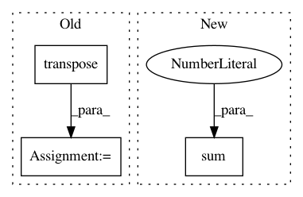

982db1e3e4097b2fa2727bddf05307633dd6df83,tf_agents/bandits/agents/utils.py,,build_laplacian_over_ordinal_integer_actions,#Any#,81
Before Change
tensor=adjacency_matrix,
indices=full_indices,
updates=tf.ones([num_actions - 1], dtype=tf.float32))
adjacency_matrix = adjacency_matrix + tf.transpose(adjacency_matrix)
degree_matrix = tf.linalg.tensor_diag(tf.reduce_sum(adjacency_matrix, axis=1))
laplacian_matrix = degree_matrix - adjacency_matrix
return laplacian_matrix
After Change
for i in range(num_actions - 1):
adjacency_matrix[i, i + 1] = 1.0
adjacency_matrix[i + 1, i] = 1.0
laplacian_matrix = np.diag(np.sum(adjacency_matrix,
axis=0)) - adjacency_matrix
return laplacian_matrix
In pattern: SUPERPATTERN
Frequency: 3
Non-data size: 3
Instances
Project Name: tensorflow/agents
Commit Name: 982db1e3e4097b2fa2727bddf05307633dd6df83
Time: 2020-03-12
Author: no-reply@google.com
File Name: tf_agents/bandits/agents/utils.py
Class Name:
Method Name: build_laplacian_over_ordinal_integer_actions
Project Name: tensorly/tensorly
Commit Name: 6dfa3d3e9a6a668ca6380134da7db7b63fad7f6a
Time: 2021-02-25
Author: caglayan.tuna@irisa.fr
File Name: tensorly/decomposition/_nn_cp.py
Class Name:
Method Name: non_negative_parafac_hals
Project Name: tensorly/tensorly
Commit Name: ea4ad8fdc0438cd07a66b7807403ef2b9b64b1b2
Time: 2018-12-12
Author: asmeurer@gmail.com
File Name: tensorly/kruskal_tensor.py
Class Name:
Method Name: kruskal_to_tensor